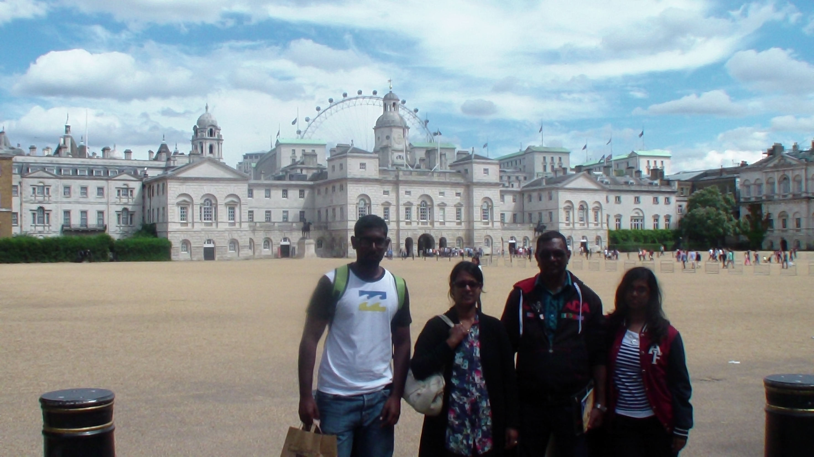

This was our first visit to London with both children. The plane landed at about 6.30 a.m. The first thing you notice after you land at Heathrow airport is the interminable queues before you can cross immigration. We spent almost 3 hours in the queue. My nephew, Magessen, was waiting for us outside, ot really knowing why it was taking so long. When finally we managed to get out, we go into the taxi and travelled to Kings cross where we had rented an appartment. Again that car trip was painful due to the high level of congestion in London. In some areas, you scarecely move at all. Still, London is nice to vist. Its mixture of modern and traditional building is really impressive. When we finally reached the residence, it was past 12.00. The residence was a nice one. It was on the 10th floor of a multi-storey building, with a pleasant view ove the city.
After resting for a while, we went out to look for something to eat. There were plenty of restaurant and fast-food outlets in the vicinity. After the meal, we set out to visit some parts of London. One the the impressive features of London is its underground LRT service, which covers almost the whole of London and very efficiently. The multiple lines, with their intersections make it very convenient for anybody to travel from one place to another. Additionally, all the LRT stations display the whole LRT map with clear instructions. Other than the map, The LRT stations are very impressive, with their multiple levels and escalators for reaching different levels. No less impressive is the amount of people continuously rushing up and down the escalators. London is defintely a very hectic place. Everyone seems to be in a hurry in London.
There are so many things to see in London. First there is the Thames River and its impressive bridges- The London bridge and the Tower bridge, then there is the buckingum palace, Madame Tussaud and the planetarium among the passive observation items. Madame Tussaud is obviously world-known for it close-to-real-life wax statues. To get into the Madam Tussaud building, one needs to stand in a queue of at least 3 hours. There are different position marks, indication the amount of time you expect from a given position to reach the entrance. One can see the large number of people queuing up, some waiting patiently for the next slow step, others getting exasperated.
The Thames river is another wonderful sight. With its big size, tourists are very much attacted to cruises on the Thames. The sights of the Tower bridge and London bridge crossing the Thames are wonderful. A large number of cruise boats go up and down the Thames throughout the day. On the sides of the river a large number of restaurants add to the natural features of the place. All the restaurants are genrally crowded. Towards night-fall, the scene is even more spectacular.
The Buckingham palace is another important tourist attraction in London. With the size of the palace and its surrounding land, it really looks impressive. There is perpetually a big crowd of tourists in front of the palace, taking photographs from different angles. The scene of the palace withh its guards remaining quasi stationary in front, with their traditional clothes and wig makes it look like a sight from a fairy tale. There is a large free area in front of the palace which is kept on purpose for tourists to use and take photographs. This area is well planted with beautiful flowers and well maintained.
We also had the opportunity to visit the Dungeon. This place displays the history of England in the form of people and weapons used in the old days. The place is made lively by shows that go on during the whole day. For example, we saw a show of court in the traditional British style, but in a humourous way. Then tere is a kind of ride, where you buckle yourself to your seat, which moves together the other seats as a row. There are several such rows. The rows are moved slowly up and down, but finally there is a sudden sharp drop that prompts everyone to scream.